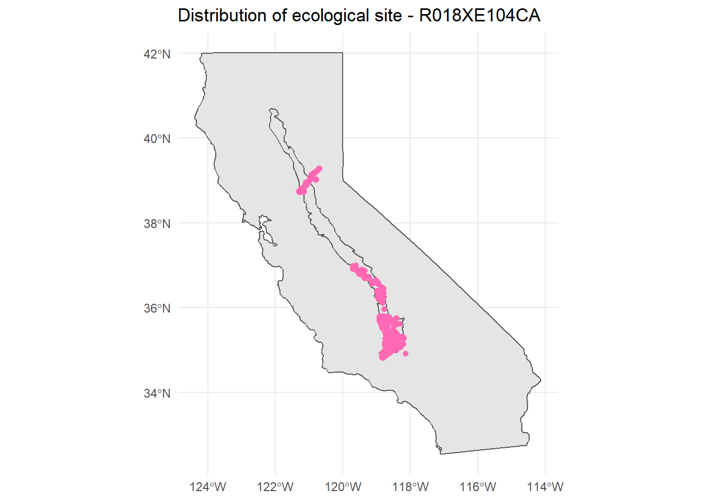

Chapter 4 Ecosites
4.1 What ecosites are active in an MLRA?
Load the Standard Dataset and packages.
Then, we simply need to call the ecosite IDs or ecosite names, depending on your preference. Remember, remove head() to see the full list.
head(my.components.MLRA$ecosite_id)## [1] "R018XA103CA" "R018XA103CA" "R018XA104CA" "F018XA202CA" "R015XE001CA"
## [6] "R015XE026CA"head(my.components.MLRA$ecosite_name)## [1] "Shallow Thermic Volcanic Ridges 30- 40 PZ"
## [2] "Shallow Thermic Volcanic Ridges 30- 40 PZ"
## [3] "Shallow Mesic Volcanic Ridges 39 - 49 PZ"
## [4] "Deep Mesic Mountain Slopes & Summits 40- 55 PZ"
## [5] "Clayey Hills 10-14\" p.z."
## [6] "Loamy Slopes 9-12\" p.z."There are likely NAs (missing values) in the above list. This is because the above considers components are are minor and miscellaneous. We do not correlate ecosites to components that are minor and miscellaneous. It will likely be more useful to remove minor and miscellaneous componets:
my.components.MLRA.reduced <- my.components.MLRA %>% aqp::site() %>%
filter(compkind != "miscellaneous area" & majcompflag == "1")
head(my.components.MLRA.reduced$ecosite_id)## [1] "R018XA103CA" "R018XA103CA" "R018XA104CA" "F018XA202CA" "R015XE001CA"
## [6] "R015XE026CA"head(my.components.MLRA.reduced$ecosite_name)## [1] "Shallow Thermic Volcanic Ridges 30- 40 PZ"
## [2] "Shallow Thermic Volcanic Ridges 30- 40 PZ"
## [3] "Shallow Mesic Volcanic Ridges 39 - 49 PZ"
## [4] "Deep Mesic Mountain Slopes & Summits 40- 55 PZ"
## [5] "Clayey Hills 10-14\" p.z."
## [6] "Loamy Slopes 9-12\" p.z."We might also be interested to see how often different ecosites are used:
table(my.components.MLRA.reduced$ecosite_id) %>% as.data.frame() %>%
dplyr::rename(Ecosite = Var1) %>% arrange(desc(Freq)) %>% head()## Ecosite Freq
## 1 F022AW007CA 413
## 2 R017XY902CA 410
## 3 R017XY905CA 287
## 4 R017XY903CA 251
## 5 R017XY904CA 215
## 6 F018XC201CA 155Interesting… the most used ecosites in MLRA18 are ecosite concepts from MLRAs 22a and 17.
4.2 Range in characteristics of ecosites
I created a report that summarizes the characteristics of ecosites. It is organized based on the information that is supposed to be populated in EDIT. Here is a link to a sample report. I have established a methodology allowing you to create reports like the one linked for all of the ecosites in your MLRA within a few short steps. You can also produce the report for just one of your ecosites. For documentation on this methodology, click here. Click on the green ‘Code’ button and choose ‘Download ZIP.’ Once you have downloaded to the location of your preference, you can right click > Extract all. You can then open the read_me.docx file. Additionally, you can watch the following YouTube video:
4.3 Mapping ecological sites
For this methodology, the ecological site is mapped in all map units containing a component correlated to the ecological site. The alternative would be to map the ecological site only in map units where the dominant component is correlated to the ecological site of interest. I am more interest in the full extent of the ecological site, so I am using the less restrictive of the two.
Load the Standard Dataset and packages.
Load a shapefile of your map unit boundaries (the MLRA boundaries cover the whole country, but you will have to change the map unit boundaries to your local map unit shapefile)
mapunit_boundaries <- sf::read_sf("C:/Users/Nathan.Roe/Documents/PES/gSSURGO_CA_2022.gdb",
"mupolygon")
mlra_boundaries <-
sf::read_sf("C:/Users/Nathan.Roe/Documents/PES/MLRA_52_2022/MLRA_52_2022/MLRA_52.shp")What is your ecological site of interest? (change appropriate to your project)
ecosite_of_interest <- "R018XE104CA"What is your MLRA of interest? (change appropriate to your project)
mlra_of_interest <- 18Reduce component data to those associated with ecosite of interest
my.components.MLRA.reduced <- aqp::site(my.components.MLRA) %>%
filter(ecosite_id == ecosite_of_interest)Reduce mapunits to those associated with ecosite of interest
mapunit_boundaries_of_interest <- mapunit_boundaries %>%
dplyr::filter(MUKEY %in% my.components.MLRA.reduced$muiid) %>%
sf::st_transform("+proj=longlat +datum=WGS84")Reduce MLRA boundary to MLRA of interest
mlra_boundaries_reduced <- mlra_boundaries %>%
dplyr::filter(MLRARSYM == mlra_of_interest) %>%
sf::st_transform("+proj=longlat +datum=WGS84")Select state of interest (change appropriate to your project, you could select multiple states too)
ca <- st_as_sf(maps::map("state", fill = TRUE, plot = FALSE)) %>%
dplyr::filter(ID == "california") %>%
sf::st_transform("+proj=longlat +datum=WGS84")Plot map
ggplot() + theme_minimal() + geom_sf(data = ca) +
geom_sf(data = mlra_boundaries_reduced) +
geom_sf(data = mapunit_boundaries_of_interest,
col = "hotpink", alpha = 0, size = 2) +
ggtitle(paste0("Distribution of ecological site - ", ecosite_of_interest))
4.4 Associated sites
Associated sites are ecological sites that occur in the same area of the landscape. The simplest way to think about this is ecological sites that are adjacent to your ecological site of interest. I am going to present a simple way of addressing this. We can determine what ecological sites occur in the same mapunit as your ecosite of interest. Looking at all the mapunits that your ecological site of interest occurs in, and tallying up all of the other ecological sites that are in shared mapunits, we can come to a metric of what other ecological sites tend to be near your ecological site of interest. In the future, I would like to make some improvements to this, so that it considers adjacent mapunits and considers the length of boundary between mapunits.
Load the Standard Dataset and packages.
Reduce data to major components and non-miscellaneous area
my.components.MLRA.reduced <- my.components.MLRA %>% site() %>%
filter(compkind != "miscellaneous area" & majcompflag == "1")Reduce to only MLRA18 ecosites
MLRA18_ecosites <- my.components.MLRA.reduced$ecosite_id %>%
stringr::str_subset("18X") %>% unique() Create empty lists for upcoming for loops
ecosite_mukeys_list <- list()
mus_with_ecosite_list <- list()Create for loop to determine all the mapunits that each ecological site occurs in
for(i in MLRA18_ecosites){
ecosite_mukeys_list[[i]] <- my.components.MLRA.reduced %>%
dplyr::filter(ecosite_id == i) %>% pull(mukey)
}Create a list of dataframes. Each dataframe has the name of the ecological site that it represents. The dataframes contain all of the component data from all of the mapunits that the ecosite occurs in. For example, let’s say we have an ecosite named F018XA201CA. The dataframe for F018XA201CA will contain data for all the components that occur in all of the mapunits that F018XA201CA occurs in. That means that many of the components will be components correlated to F018XA201CA, but it will also contain other components not correlated to F018XA201CA.
for(i in MLRA18_ecosites){
mus_with_ecosite_list[[i]] <- my.components.MLRA.reduced %>%
dplyr::filter(mukey %in% ecosite_mukeys_list[[i]])
}Now, we make a table from all of the ecological site data in each dataframe.
associated_sites <- lapply(mus_with_ecosite_list, FUN = function(x){
table(x$ecosite_id) %>% as.data.frame() %>% arrange(desc(Freq)) %>%
dplyr::rename(Ecosite = Var1)
})The result is this list called associated_sites. associated_lists has a dataframe for every ecological site, ordered by how frequently the other ecologica sites occur. The table describes all the other ecological sites that occur in the same mapunit as the defined ecological site.
Let’s take a look at an example
associated_sites$F018XA202CA## Ecosite Freq
## 1 F018XA202CA 19
## 2 R018XA103CA 6
## 3 R018XA104CA 3Here, we can see that we are looking at the ecological site F018XA202CA. The ecological site that most commonly occurs in mapunits containing your ecological site……is your ecological site. That will likely always be the case. The other ecological sites it appears with are R018XA103CA and R018XA104CA - those are actually informative.